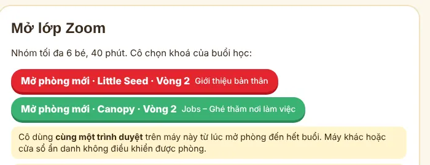
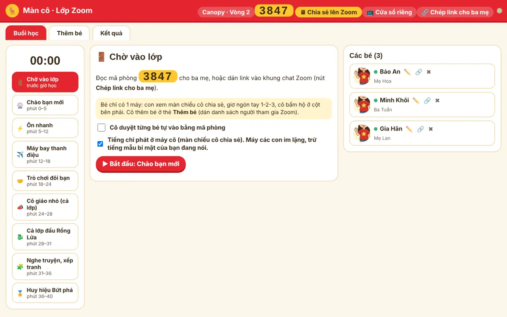
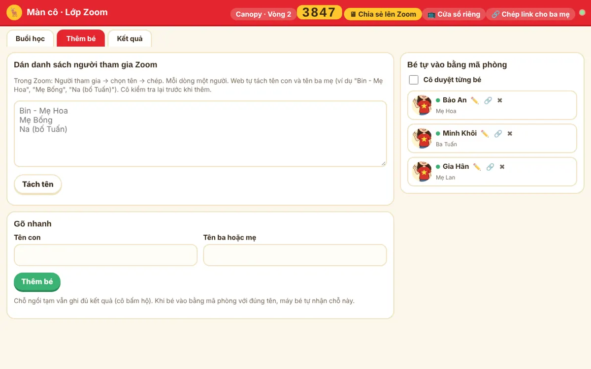
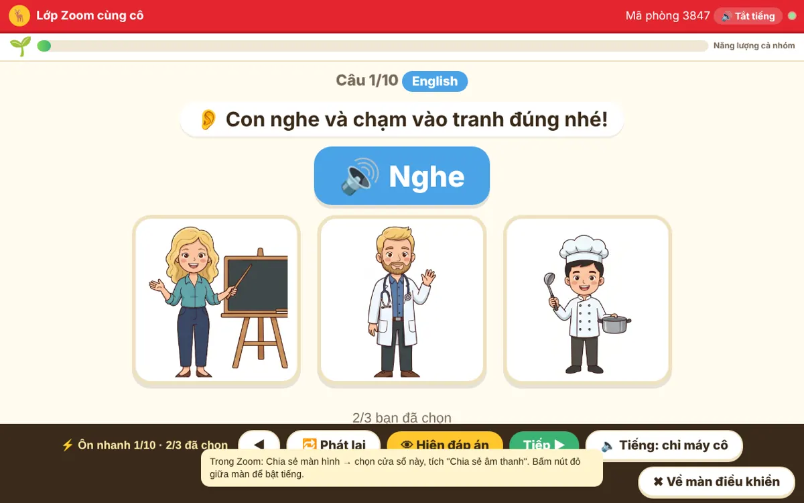
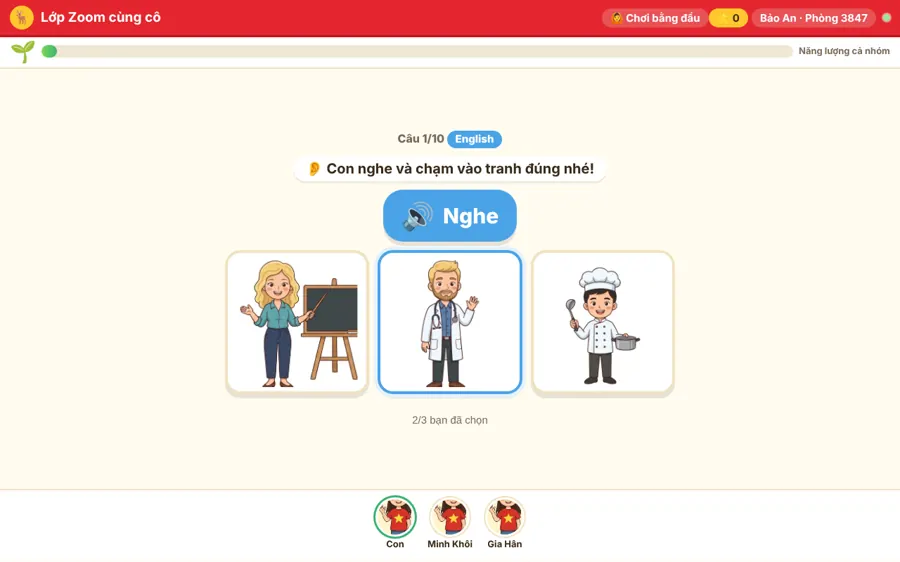
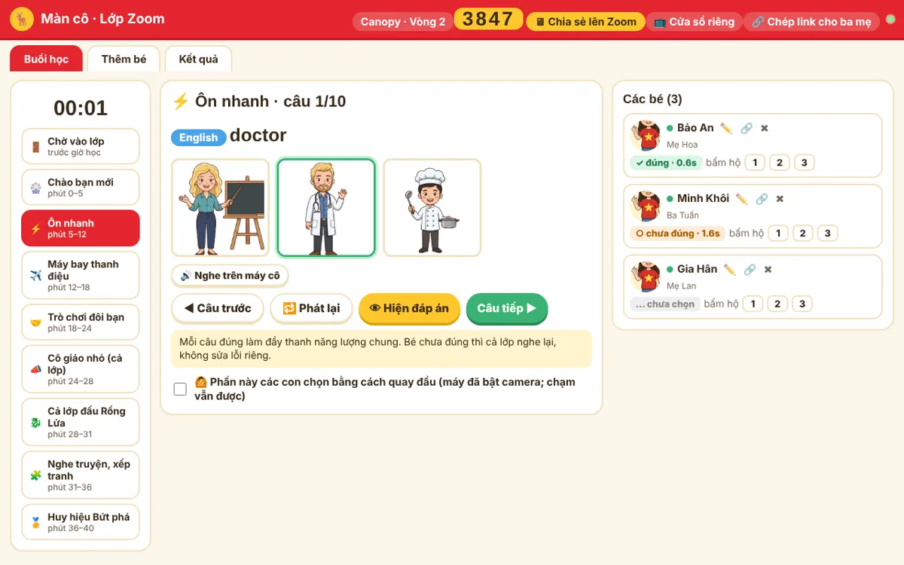
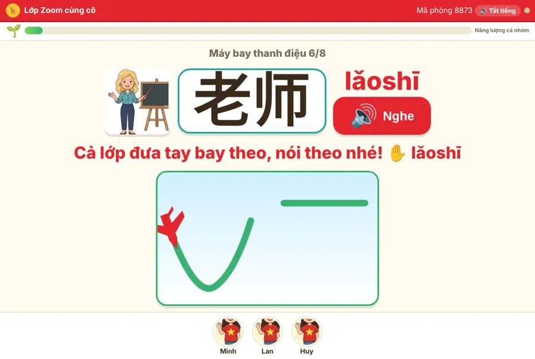
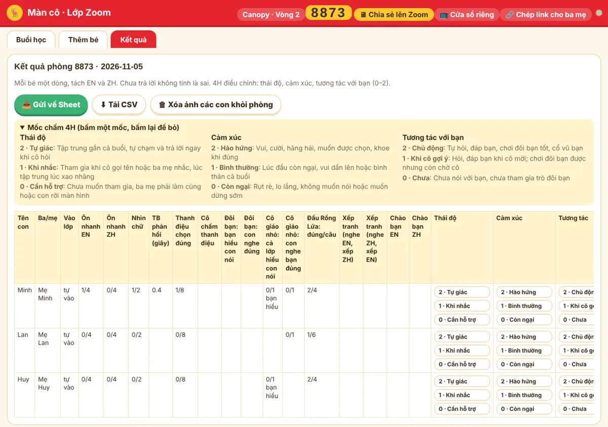

🔗 Link cần dùng
Cô muốn tập trước: mở co.html?mock=1 ở một tab, mở thêm 2–3 tab index.html?mock=1 làm bé. Chế độ này chạy trên một máy, không cần mạng Firebase, không ghi dữ liệu thật.
🖥 Buổi học có 3 màn hình
Màn cô
Chỉ cô thấy. Có mã phòng, 9 phần của buổi học, danh sách bé với ✓/○ từng câu, nút chấm, bấm hộ, kết quả.
Không chia sẻ màn này lên Zoom vì có đúng/sai của từng bé.
Màn chiếu
Cô chia sẻ màn này lên Zoom: tranh to, có tiếng, đáp án đúng hiện cho cả lớp, không hiện ai đúng ai sai.
Màn bé
Máy thứ hai của con (điện thoại, máy tính bảng). Con nghe, chạm tranh, nói. Đúng thì hiện ⭐, chưa đúng thì không hiện gì.
📋 Trước buổi học
1–2 ngày trước
- Sale gửi ba mẹ link Chuẩn bị vào lớp đúng khoá (Little Seed hoặc Canopy): ba mẹ điền tên con, tên ba/mẹ, con chọn bạn đồng hành, ảnh con nếu muốn.
- Dặn ba mẹ chuẩn bị 2 máy: một máy vào Zoom, một máy mở trang lớp. Chỉ có 1 máy vẫn học được: con giơ ngón tay, cô bấm hộ.
- Cô tập thử một lượt bằng chế độ ?mock=1 nếu là lần đầu dạy.
15 phút trước giờ
- Dùng máy tính, trình duyệt Chrome. Từ lúc mở phòng đến hết buổi chỉ dùng đúng một trình duyệt này (không dùng cửa sổ ẩn danh, không đổi máy).
- Cắm sạc, bật loa, mở Zoom.
- Mở Màn cô, mở phòng mới đúng khoá (xem bước dưới).
- Bấm Chép link cho ba mẹ, dán vào khung chat Zoom.
🚪 Mở phòng và đón bé
- Mở phòng mới. Trên màn cô bấm Mở phòng mới · Little Seed · Vòng 2 hoặc Mở phòng mới · Canopy · Vòng 2. Web tạo mã phòng 4 số hiện to ở góc trên.
- Gửi link. Bấm 🔗 Chép link cho ba mẹ rồi dán vào chat Zoom, hoặc đọc mã phòng cho ba mẹ.
- Bé vào lớp. Ba mẹ mở link, nhập mã, gõ tên con và tên ba/mẹ (máy đã chuẩn bị hoặc đã học web 21 ngày thì điền sẵn). Bé hiện ở cột Các bé bên phải màn cô.
- Cô thêm bé nhanh (thẻ Thêm bé) nếu ba mẹ loay hoay:
· Trong Zoom: Người tham gia → chọn tên → chép, dán vào ô, bấm Tách tên, sửa rồi thêm.
· Hoặc gõ nhanh tên con, tên ba mẹ. Đây là chỗ ngồi tạm: vẫn ghi đủ kết quả (cô bấm hộ); khi bé vào bằng mã với đúng tên, máy bé tự nhận chỗ này. - Kiểm tra cột Các bé. Chấm xanh = đang trực tuyến. ✏️ sửa tên · 🔗 ghép hai chỗ của cùng một bé · ✖ cho ra khỏi lớp.
Muốn duyệt từng bé trước khi vào: ở phần Chờ vào lớp tích Cô duyệt từng bé tự vào bằng mã phòng. Bé chờ duyệt hiện nút Cho vào lớp / Không.



📡 Chia sẻ lên Zoom và điều khiển
- Trên màn cô bấm 🖥 Chia sẻ lên Zoom. Cả cửa sổ thành màn chiếu, thanh nút điều khiển nằm ở dưới đáy.
- Bấm nút đỏ giữa màn để bật tiếng.
- Trong Zoom: Chia sẻ màn hình → chọn cửa sổ trình duyệt này → tích "Chia sẻ âm thanh".
- Cần xem bé nào đã chọn, chấm hoặc bấm hộ: bấm ✖ Về màn điều khiển hoặc phím Esc. Zoom vẫn đang chia sẻ cửa sổ, nên cô nên quay lại màn chiếu nhanh.
Cách khác: 📺 Cửa sổ riêng mở màn chiếu ở một cửa sổ khác. Cô chia sẻ cửa sổ đó trên Zoom, còn màn cô để ở cửa sổ kia (hợp với máy có 2 màn hình).
| Phím | Việc |
|---|---|
| → | Câu / lượt / cảnh tiếp |
| ← | Câu trước |
| Space | Hiện đáp án |
| R | Phát lại tiếng |
| Esc | Về màn điều khiển |
Tiếng chỉ phát ở máy cô (mặc định): chỉ màn chiếu phát tiếng qua Zoom, máy các con im lặng để không vọng tiếng. Riêng tiếng mẫu bí mật của bạn đang nói (Chào bạn mới, Đôi bạn, Cô giáo nhỏ) phát nhỏ trên máy bạn đó; màn bạn đó nhắc ba mẹ tắt mic Zoom khi con nghe mẫu.


⏱ Mạch 40 phút
Bấm lần lượt các phần ở cột trái màn cô. Đồng hồ chạy từ lúc bắt đầu phần đầu tiên và chuyển đỏ khi quá giờ của phần. Mỗi câu thường là: các con chọn → Hiện đáp án → Câu tiếp. Nhiều bé chưa đúng: bấm ↺ Hỏi lại câu này để cả lớp làm lại (kết quả lấy lần mới nhất).
Chào bạn mới
phút 0–5- Mục tiêu
- Mỗi bạn được gọi tên, nói một câu thật về mình. Khởi động không khí.
- Cô bấm
- 🎡 Quay · tiếng Anh hoặc 🎡 Quay · tiếng Trung. 🎡 Hỏi mẹ · tiếng Anh / tiếng Trung hoặc 🎡 Hỏi ba · tiếng Anh / tiếng Trung; nên xen kẽ mẹ và ba. Vòng quay ưu tiên bạn chưa được cô chấm. Muốn chọn đúng một bạn: bấm 🎯 cạnh tên bé.
- Các con làm
- Cả lớp hỏi What's your name? / 你叫什么？, bạn được chọn trả lời My name is… / 我叫… Cả lớp hỏi What does your mom / dad do? / 你妈妈 / 你爸爸做什么工作？, bạn được chọn nói nghề thật: My mom / dad is a … / 我妈妈 / 我爸爸是…. Bạn nói tốt thì cô hỏi thêm Where does she / he work? Nghề chưa học thì cô gợi ý từ gần nhất hoặc nói cùng con.
- Cô chấm
- Cột phải, nút EN ZH: bấm 1 lần = ✓ con tự nói, bấm lần 2 = ~ nói cùng cô, bấm lần 3 = bỏ.
Nói theo cô
phút 5–9- Mục tiêu
- Ôn lại cả loạt từ, cụm, câu của tuần bằng miệng trước khi kiểm tra chạm tranh.
- Nội dung
- 14 mục: 8 từ (name, you, one–six) rồi 6 câu (One, two, three! · What's your name? · My name is Anna. · How old are you? · I'm five. · I'm six!). "Nice to meet you!" chỉ nghe nên không có ở đây. 25 mục: 15 từ (nghề, nơi làm việc, người thân) → 4 cụm work at a … / 在…工作 → 6 câu (What does your mom / dad do? · My mom is a doctor. · 他在医院工作。 · My dad is a chef. He works at a restaurant. · She is an employee. She works at a shop.).
- Cách chạy
- Màn chiếu hiện tranh, đọc tiếng Anh rồi tiếng Trung. Sau mỗi tiếng có tiếng “tách”, chữ “Cả lớp nói theo!” và thanh thời gian: các con nói theo trong khoảng lặng đó (dài hơn với câu dài).
- Cô bấm
- ▶ Tự chạy (phím Space) để web tự sang mục sau, đến mục cuối thì dừng; hoặc bấm Tiếp ▶ từng mục. 🔁 Đọc lại khi các con chưa nói kịp. Nút Từ Cụm từ Câu để nhảy nhóm; Đọc trước: English ⇄ để đổi thứ tự.
- Cô chấm
- Không chấm, không sửa lỗi riêng. Cô bật mic cho cả lớp nói cùng lúc, hoặc mời 1–2 bạn nói to.
Ôn nhanh
phút 9–14- Mục tiêu
- Kiểm tra nhanh từ và câu của tuần bằng cả hai tiếng, có số liệu từng bé.
- Nội dung
- 10 câu: 4 nghe tiếng Anh, 4 nghe tiếng Trung, 2 nhìn chữ. Từ name, you, one–six và các cụm của vòng; nhìn chữ 三 và Anna. Khó dần: từ (nghề, nơi làm việc, người thân) → cụm work at a … / 在…工作 → câu (他在医院工作。, My mom is a doctor.…) → nhìn chữ 牙医, 学校.
- Cô bấm
- Chờ các con chọn (màn cô hiện "N/6 bạn đã chọn") → 👁 Hiện đáp án (Space) → Câu tiếp ▶ (→).
- Cô chấm
- Tự động: đúng/chưa và thời gian phản hồi. Bé 1 máy giơ 1-2-3 ngón tay, cô bấm hộ số tranh ở cột phải.

Máy bay thanh điệu
phút 14–19- Mục tiêu
- Nghe ra và nói đúng thanh điệu tiếng Trung.
- Nội dung
- 8 chữ một âm tiết: 一 二 三 四 五 六 你 叫. Con chạm 1 trong 4 đường bay: Bay ngang (thanh 1), Bay lên (2), Lượn xuống rồi lên (3), Lao xuống (4). 8 từ hai chữ: 医生 医院 厨师 学校 饭店 老师 工作 牙医. Con chạm 1 trong 4 đường bay hai chặng (ví dụ "Lượn + ngang" cho lǎoshī). Các lựa chọn sai chỉ khác đáp án ở một chữ.
- Bay bằng tay
- Trên máy bé có nút ✋ Bay bằng tay: con giơ ngón trỏ trước camera, đếm 3-2-1, nghe “tách” thì bay tay theo thanh (Canopy: bay hai chặng, giữa hai chữ có tiếng “tách”). Máy vẽ lại đường tay con bay và chọn đường bay giống nhất; con bấm Chọn đường bay này hoặc Bay lại. Lần đầu ba mẹ bấm đồng ý dùng camera; hình chỉ xử lý trên máy, không ghi, không gửi. Cô tắt bằng ô ✋ Cho các con bay bằng tay. Kết quả ghi rõ số câu con bay bằng tay.
- Cô bấm
- Hiện đáp án → màn chiếu hiện pinyin và máy bay bay mẫu; cô hô "Cả lớp đưa tay bay theo, nói theo nhé!", các con vừa nói vừa đưa tay theo đường bay → Câu tiếp.
- Cô chấm
- Từng bé ở cột phải khi con nói: Chuẩn Gần Luyện. Bé 1 máy: bấm hộ số đường bay 1–4.

Trò chơi đôi bạn
phút 19–24- Mục tiêu
- Con nói cho bạn hiểu và nghe bạn nói: giao tiếp thật giữa các bé.
- Cách chơi
- Web tự ghép đôi (1-2, 3-4, 5-6; lẻ một bạn thì chơi với cô). Bạn A thấy tranh trên máy mình và nói; bạn B nghe rồi chạm 1 trong 3 tranh; sau đó đổi vai, đổi tiếng. Các bạn khác đoán cho vui. Canopy có cả câu: My dad is a doctor. / 我姐姐是厨师。
- Cô bấm
- Hiện đáp án → Lượt tiếp. Đổi sang tiếng Anh/Trung nếu lượt đó khó; 🔀 Ghép đôi lại khi có bé vào muộn.
- Lưu ý
- Bạn nói nghe tiếng mẫu bí mật trên máy mình; ba mẹ tắt mic Zoom khi con nghe mẫu, bật lại khi con nói. Bạn nói chỉ có 1 máy: cô nhắn riêng tranh hoặc gợi ý.
Cô giáo nhỏ (cả lớp)
phút 24–28- Mục tiêu
- Mỗi bạn một lượt nói trước cả lớp; cả lớp chuyển ngữ.
- Cách chơi
- Bạn được chọn nói câu trong tranh cho cả lớp nghe; các bạn còn lại chạm tranh. Hiện đáp án xong, cả lớp cùng nói câu đó bằng tiếng kia.
- Chơi bằng đầu
- Mặc định phần này các con chọn bằng cách quay đầu trái / ngửa lên / quay phải (nếu ba mẹ đã bật camera ở nút 🙆 trên màn bé). Cô tắt bằng ô 🙆 Phần này các con chọn bằng cách quay đầu.
Cả lớp đấu Rồng Lửa
phút 28–31- Mục tiêu
- Vận động mạnh, ngắn; cả lớp cùng thắng, không xếp hạng ai.
- Cô bấm
- Chọn thời gian (mặc định 2 phút) → bấm Tắt tiếng tất cả trên Zoom → ⚔️ Bắt đầu trận đấu. Các con tự trả lời câu ngẫu nhiên trên máy mình, mỗi câu đúng +1 ⚡. Giữa trận rồng nổi giận, các con tiếp sức kéo lại; hết giờ cả lớp thắng.
- Bé 1 máy
- Con trả lời trên Zoom, cô bấm ⚡ +1 cạnh tên con.
Nghe truyện, xếp tranh
phút 31–36- Nội dung
- Truyện Sinh nhật của Bông chia đôi. Lượt 1: nghe tiếng Anh, xếp tranh có lời tiếng Trung. Lượt 2: nghe tiếng Trung (hỏi tên, hỏi tuổi), xếp tranh có lời tiếng Anh. Truyện Gia đình Anna. Lượt 1 nghe tiếng Anh: My name is Anna. / My dad is a doctor. / My mom is a teacher. / My older sister is a chef. → xếp tranh lời tiếng Trung. Lượt 2 nghe tiếng Trung: 他在医院工作。/ 她在学校工作。/ 星期六晚上，我们去饭店吃晚饭。/ 我爱我家！ → xếp tranh lời tiếng Anh.
- Cô bấm
- Phát 4 cảnh (Cảnh tiếp) → 🧩 Cho các con xếp tranh → chờ "N bạn đã xếp xong" → 👁 Hiện đáp án → đọc từng cảnh bằng tiếng kia, cả lớp nói theo → sang lượt 2.
- Cô chấm
- Tự động: đúng cả 4 / số vị trí đúng. Bé 1 máy nói thứ tự trên Zoom, cô bấm Đúng / Chưa.
Huy hiệu Bứt phá
phút 36–40- Cô làm
- Màn chiếu hiện huy hiệu cả nhóm, ảnh hoặc bạn đồng hành của các con, thanh năng lượng đầy. Cô khen cả nhóm, chào tạm biệt, mời ba mẹ ở lại phần trao đổi (nếu có).
💛 Nguyên tắc khi dạy
📊 Sau buổi học
- Mở thẻ Kết quả. Mỗi bé một dòng: ôn nhanh EN/ZH, nhìn chữ, thời gian phản hồi, thanh điệu, đôi bạn, cô giáo nhỏ, Rồng Lửa, xếp tranh, chào bạn.
- Chấm 4H một lần theo ấn tượng chung cả buổi:
· Thái độ: Tự giác / Khi nhắc / Cần hỗ trợ
· Cảm xúc: Hào hứng / Bình thường / Còn ngại
· Tương tác với bạn: Chủ động / Khi cô gợi ý / Chưa - Ghi chú ngắn cho từng bé (điểm mạnh, điều cần luyện) để sale gọi ba mẹ.
- Bấm 📤 Gửi về Sheet (tab "Lớp Zoom"). Nếu báo lỗi: bấm ⬇ Tải CSV để giữ kết quả, gửi cho quản lý.
- Bấm 🗑 Xóa ảnh các con khỏi phòng.
